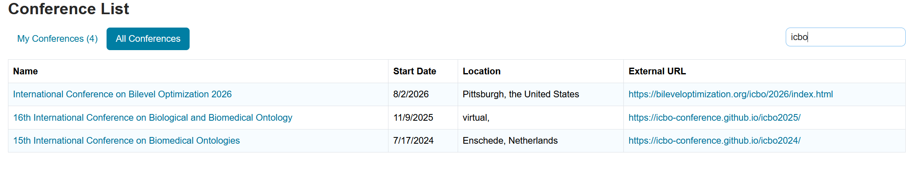

International Conference on Bilevel Optimization
Pittsburgh 2026
August 2-5, 2026
CMU - University of Pittsburgh
Pittsburgh, USA
August 2-5, 2026
CMU - University of Pittsburgh
Pittsburgh, USA
The submission process will be open from January 1st, 2026 to March 1st, 2026 April 1st, 2026 the final deadline extension: April 15th, 2026. You can submit your contribution in the following link:
or by searching the ICBO conference in the CMT service portal

Some info:
Abstract length: Up to 2,000 characters (including spaces).
Keywords: 3–5 keywords are required.
Abstract submissions will be reviewed for relevance, originality, and technical quality. Accepted abstracts will be included in the conference program, and authors of accepted submissions will be invited to present their work at ICBO 2026. At least one author of each accepted submission must register for the conference and present the work.
The Microsoft CMT service was used for managing the peer-reviewing process for this conference. This service was provided for free by Microsoft and they bore all expenses, including costs for Azure cloud services as well as for software development and support.